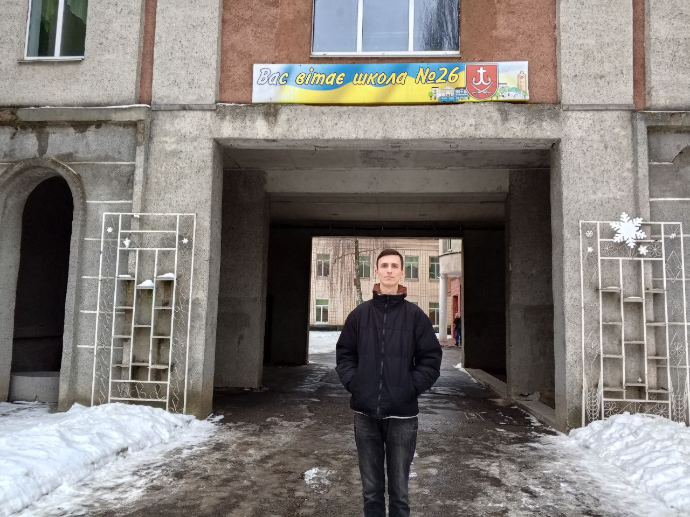
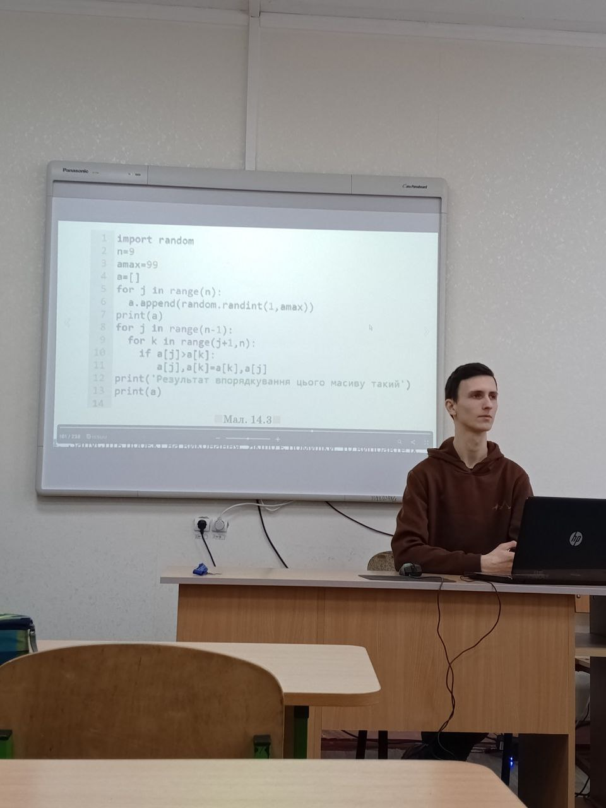
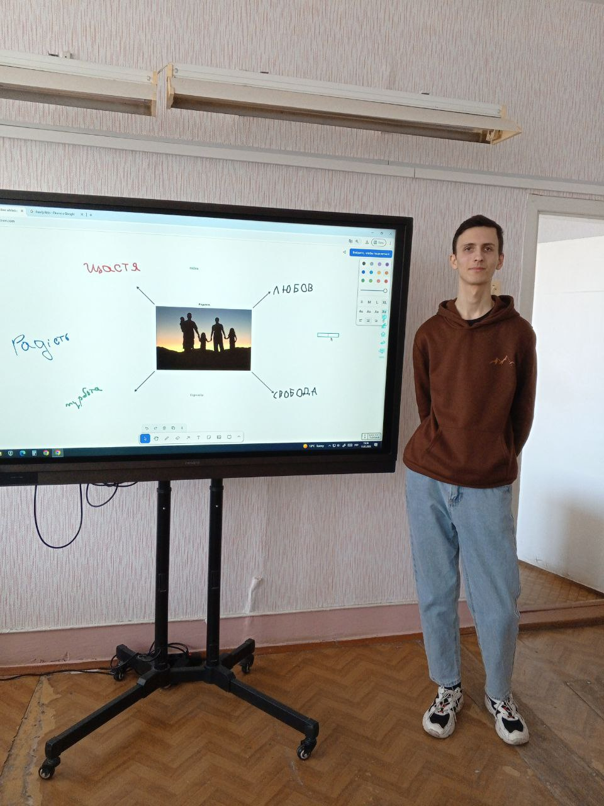
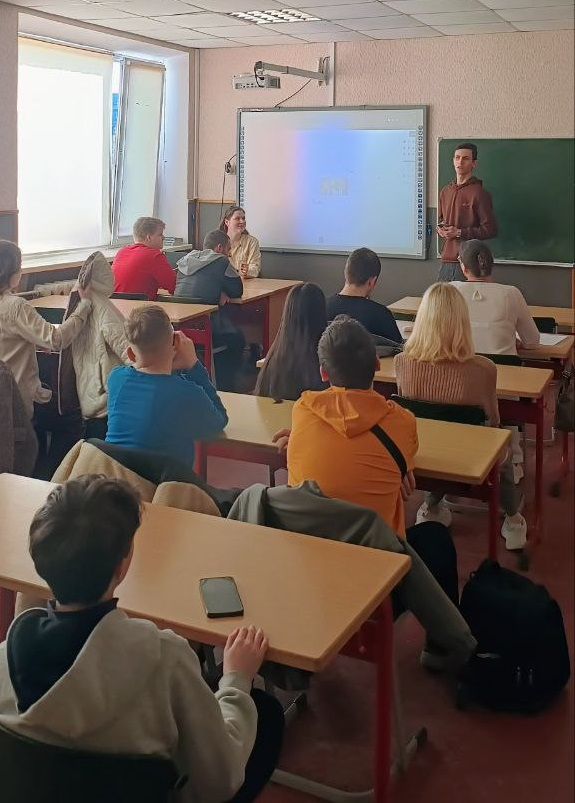
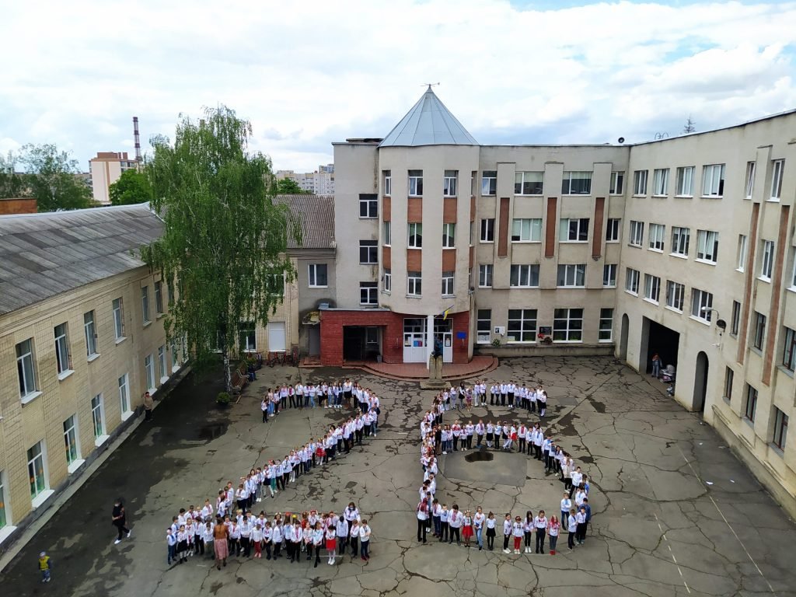

Період моєї педагогічної практики у стінах комунального закладу «Вінницький ліцей №26 імені Героя України Дмитра Майбороди» став для мене не просто черговим етапом університетського навчання, а глибоко емоційною, символічною та надзвичайно важливою подією в житті, адже саме в цих рідних стінах я провів незабутні одинадцять років свого дитинства та юності, будучи учнем цього закладу від першого до останнього дзвоника. Повернення до школи вже не в ролі дитини з рюкзаком, а в статусі вчителя-практиканта, викликало неймовірні почуття: від легкої ностальгії за шкільними роками до величезної відповідальності перед педагогічним колективом, який колись навчав мене самого і тепер став моїми колегами та наставниками. Цей ліцей завжди був і залишається для мене справжнім другим домом, де кожен коридор і кожен класний кабінет наповнені спогадами, тому можливість знову пройти знайомими маршрутами, але вже з журналом у руках та планом-конспектом, додавала особливого натхнення та драйву кожному моєму робочому дню.

Моя безпосередня діяльність під час практики була зосереджена на роботі з учнями 9-х класів, де я намагався стати для підлітків не просто вчителем, а сучасним фахівцем, який розуміє їхні інтереси, цифрові звички та щоденні виклики. Але я також мав надзвичайно цікавий та корисний досвід проведення кількох уроків у 7-х классах, що дозволило мені на практиці порівняти особливості сприйняття матеріалу різними віковими групами, адаптувати складну термінологію під молодших школярів та навчитися миттєво змінювати тактику викладання залежно від їхньої реакції.

Окреме місце в моєму професійному становленні посіли виховні, які виявилися неймовірно насиченими, багатогранними та емоційно виснажливими. Я підготував та провів цілу серію виховних годин на різноманітні тематики, що охоплювали як питання особистісного розвитку, так і соціальної відповідальності. Особливу увагу я приділив профорієнтаційній роботі з учнями 9-В класу, намагаючись допомогти їм зорієнтуватися у безмежному та мінливому світі сучасного ринку праці, розібратися у власних здібностях та усвідомити важливість свідомого вибору майбутнього професійного шляху саме зараз, на порозі дорослого життя. Справжнім апогеєм моєї громадської та виховної діяльності стала активна участь в організації та проведенні масштабного загальношкільного заходу «З днем народження, рідна школо!», присвяченого 74-й річниці заснування нашого ліцею. Це було надзвичайно приємно — відчувати атмосферу єдності, патріотизму та щирої любові до нашої великої освітньої родини, яка виховала вже не одне покоління гідних українців.

Аналізуючи сучасні реалії освітнього процесу зсередини, як педагог, я мушу підтвердити сумні статистику: сьогоднішні діти, що зростають в епоху тотальної цифровізації та надлишку інформації, часто демонструють відсутність бажання та мотивації до навчання. Їх неймовірно важко зацікавити стандартними підручниками, довгими уроками чи монотонним переписуванням матеріалу з дошки, оскільки їхня увага звикла до динамічного, яскравого та інтерактивного контенту. Проте саме цей виклик став для мене головним стимулом до творчого пошуку та професійного самовдосконалення. Я принципово відмовився від застарілих методів і почав активно інтегрувати в кожен урок сучасні цифрові технології, перетворюючи засвоєння навіть найскладніших тем на захопливий процес.
Завдяки використанню елементів гейміфікації освіти — від інтерактивних квізів і онлайн-змагань до віртуальних лабораторій та ігрових механік нарахування балів — мені вдалося не просто привернути увагу учнів, а й по-справжньому «запалити» їх матеріалом. Я бачив, як діти, які зазвичай відсиджувалися на задніх партах, починали активно дискутувати, розв'язувати завдання та просити «ще одне випробування». Використання гаджетів не як відволікаючого фактора, а як потужного інструмента пізнання, дозволило мені пояснити складні алгоритми та концепції мовою, зрозумілою сучасному поколінню. Я щиро задоволений кожною хвилиною, проведеною в ліцеї, адже цей досвід підтвердив: не буває «поганих» учнів, бувають методи, які потребують оновлення. Повертаючись до університету, я забираю з собою не лише заповнений щоденник практики, а й тепле відчуття того, що в рідній школі мене завжди чекають, а мої зусилля принесли реальну користь та зацікавленість у дитячих очах.

Окремо варто відзначити методичне підґрунтя моєї діяльності, адже весь навчальний процес я вибудовував, суворо дотримуючись вимог сучасної освітньої реформи та стандартів Нової української школи. Моя робота базувалася на модельній навчальній програмі «Інформатика. 7–9 класи» (авторський колектив під керівництвом Н. В. Морзе), яка орієнтована на формування ключових компетентностей та практичних навичок у цифровому середовищі. Відповідно до цієї програми я працював за календарно-тематичним плануванням, яке дозволило логічно та послідовно структурувати матеріал, поєднуючи теоретичні блоки з інтенсивною практичною підготовкою. В освітньому процесі я опирався на відповідний підручник, що входить до цього навчально-методичного комплекту, використовуючи запропоновані в ньому кейси та завдання як фундамент, на якому я вже згодом розробляв власні інтерактивні вправи та гейміфіковані модулі. Такий системний підхід допоміг не лише виконати програму в повному обсязі, а й забезпечити високу якість засвоєння знань, роблячи уроки структурованими, змістовними та максимально наближеними до сучасних вимог ІТ-освіти.
Календарно-тематичне планування 9 клас Морзе
Переглянути